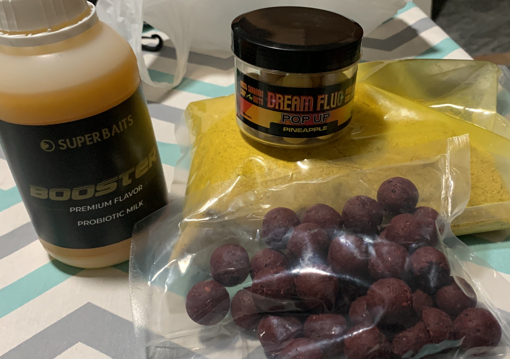

Todo sobre Carpfishing: cebos, montajes y consejos para pescar carpas en Mérida y alrededores.

Usado en aguas tranquilas y cerca de la orilla. Muy efectivo para carpas grandes.

Perfecto para atraer carpas en otoño. Mezcla con maíz y harina de pescado.

Ideal para zonas profundas y con corriente suave. Mantener fresco antes de usar.
Aquí podrás añadir tus montajes, fotos de cañas y técnicas de pesca. Más adelante puedes poner imágenes, videos o diagramas de tus montajes favoritos.